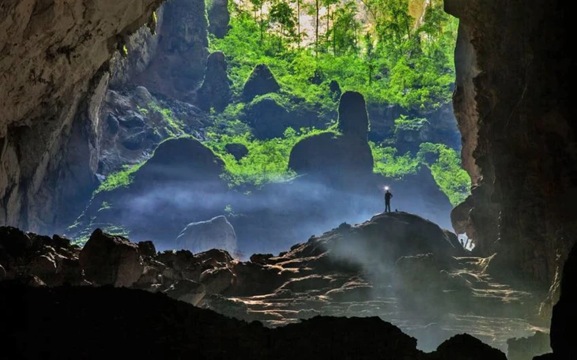
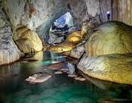
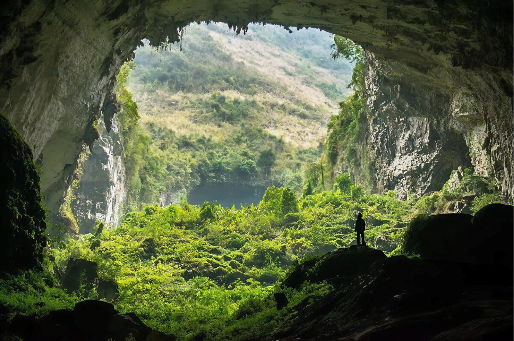
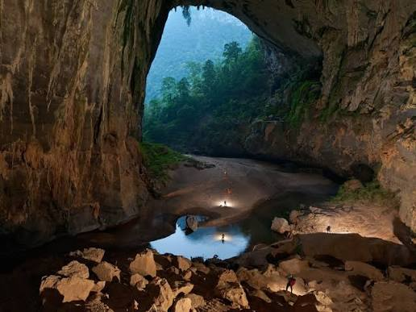

Kiệt tác thiên nhiên kỳ vĩ của Việt Nam
Khám phá vẻ đẹp huyền bí giữa lòng di sản

Hang Sơn Đoòng nằm trong khu vực Vườn quốc gia Phong Nha - Kẻ Bàng, tỉnh Quảng Trị. Đây là một trong những hang động tự nhiên nổi tiếng nhất thế giới.
Hang nổi bật với không gian rộng lớn, những khối thạch nhũ khổng lồ, dòng sông ngầm và những hố sụt ánh sáng tuyệt đẹp.
Đặc biệt, bên trong hang còn có khu rừng nguyên sinh độc đáo, tạo nên một thế giới thiên nhiên kỳ thú ngay dưới lòng đất.
Sơn Đoòng là niềm tự hào của thiên nhiên Việt Nam và là một điểm nhấn đặc biệt của di sản Phong Nha - Kẻ Bàng.



Tìm hiểu thông tin chi tiết về Hang Sơn Đoòng, cảnh quan, hành trình khám phá và các hoạt động bảo tồn.
Truy cập website →Khám phá hồ sơ thông tin, giá trị văn hóa và dữ liệu giới thiệu về Hang Sơn Đoòng.
Truy cập website →